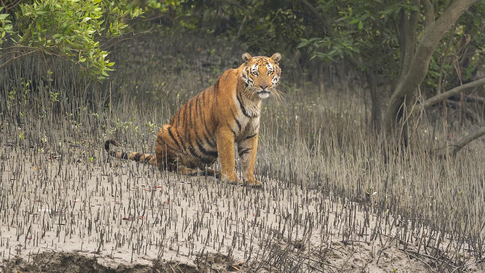
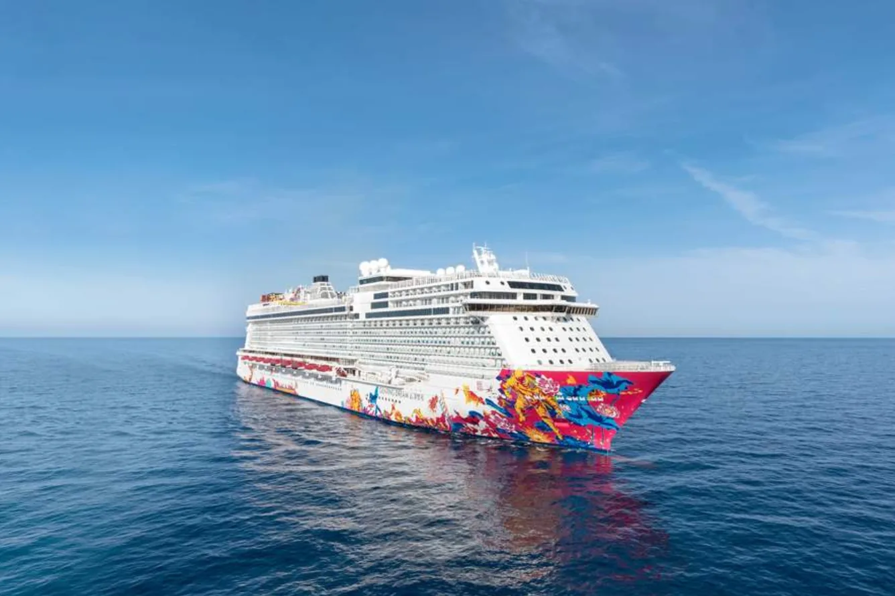

MANGROVE
マングローブの水路
ボートから森の景観を観察します。天候や潮位によって見え方が変わります。
SUNDARBANS / MANGROVE FOREST
水路とマングローブが広がる、豊かな生態系を持つ自然地域です。
ABOUT THE AREA
スンダルバンスは、潮の満ち引きの影響を受けるマングローブ林です。静かな水路、鳥類、シカなど、多様な自然環境を観察できます。
野生動物との距離を保ち、ゴミを残さず、ガイドの指示に従うことが大切です。
PLACES TO SEE
写真と短い説明で、地域の特徴を紹介します。
ボートから森の景観を観察します。天候や潮位によって見え方が変わります。

運が良ければ野生動物を観察できます。接近や餌やりは行いません。

重要な生息地域として保全されています。安全のためガイドの指示を守ります。

水路を移動しながら自然を観察する代表的な体験です。
TRAVEL NOTES
安全で気持ちのよい旅にするための基本的な注意点です。
許可・安全設備・ガイド体制を確認して予約します。
大きな音を避け、植物や動物に触れないようにします。
虫よけ、帽子、双眼鏡、防水対策があると便利です。
MAP
外部地図サービスを利用しています。